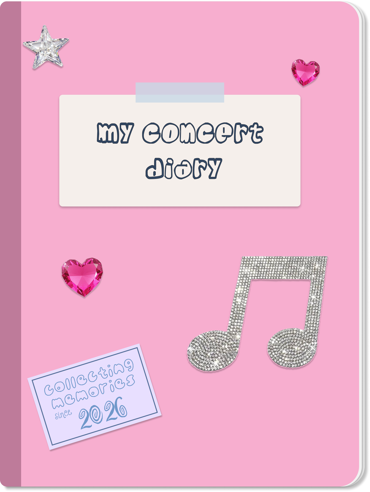

Journal all your favourite concerts
add concert!about
this website is deisgned to allow you to document all of your concerts into one digital diary where you can document and view all your memories. this is designed for all music lovers who want to save their experiences with accommpaning statistics too!
keep all of your memories together. for those who love to reflect on their experiences
